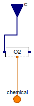
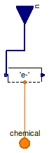
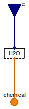

Table of Contents
- User's Guide
- Blocks
- Conditions
- Assemblies
- Regions
- Subregions
- Connectors
- Characteristics
- Units
- Quantities
- BaseClasses
Download
- Latest: FCSys-2.0.zip (**Please check back soon or contact kdavies4 at gmail.com.)

All of the submodels for the individual species in
Gas,
Graphite,
Ionomer, and
Liquid models
are instances of the Conditions.Chemical.Species
model rather than Conditions.Chemical.Reaction).
That means that the subconnectors in the
(chemical connectors of the models in this package are
ChemicalOutput connectors
(rather than ChemicalInput).
Extends from Modelica.Icons.Package (Icon for standard packages).
| Name | Description |
|---|---|
| Condition for gas | |
| Condition for graphite | |
| Condition for ionomer | |
| Condition for liquid | |
| Base classes (not generally for direct use) |
 FCSys.Conditions.ChemicalBus.Gas
FCSys.Conditions.ChemicalBus.Gas
| Type | Name | Default | Description |
|---|---|---|---|
| Axes with linear momentum included | |||
| Boolean | inclLinX | true | X |
| Boolean | inclLinY | false | Y |
| Boolean | inclLinZ | false | Z |
| Species | |||
| Boolean | inclH2 | false | Hydrogen (H2) |
| Species | H2 | Model | |
| Boolean | inclH2O | false | Water (H2O) |
| Species | H2O | Model | |
| Boolean | inclN2 | false | Nitrogen (N2) |
| Species | N2 | Model | |
| Boolean | inclO2 | false | Oxygen (O2) |
| Species | O2 | Model | |
| Type | Name | Description |
|---|---|---|
| ChemicalBus | chemical | Bus of ChemicalInput and ChemicalOutput connectors of multiple species |
| RealInputBus | u | Bus of inputs to specify conditions |
model Gas "Condition for gas" extends BaseClasses.NullPhase; // Conditionally include species. parameter Boolean inclH2=false "Hydrogen (H2)";Chemical.Species H2( final inclLinX=inclLinX, final inclLinY=inclLinY, final inclLinZ=inclLinZ, redeclare FCSys.Characteristics.H2.Gas Data) if inclH2 "Model"; parameter Boolean inclH2O=false "Water (H2O)";Chemical.Species H2O( final inclLinX=inclLinX, final inclLinY=inclLinY, final inclLinZ=inclLinZ, redeclare FCSys.Characteristics.H2O.Gas Data) if inclH2O "Model"; parameter Boolean inclN2=false "Nitrogen (N2)";Chemical.Species N2( final inclLinX=inclLinX, final inclLinY=inclLinY, final inclLinZ=inclLinZ, redeclare FCSys.Characteristics.N2.Gas Data) if inclN2 "Model"; parameter Boolean inclO2=false "Oxygen (O2)";Chemical.Species O2( final inclLinX=inclLinX, final inclLinY=inclLinY, final inclLinZ=inclLinZ, redeclare FCSys.Characteristics.O2.Gas Data) if inclO2 "Model"; equation // Note: It would be helpful if Modelica allowed elements of expandable // connectors to be named by the contents of a string variable and the // name of an instance of a model was accessible through a string (like // %name is expanded to be the name of the instance of the model). Then, // the connection equations that follow could be generic. // H2connect(H2.chemical, chemical.H2); connect(u.H2, H2.u); // H2Oconnect(H2O.chemical, chemical.H2O); connect(u.H2O, H2O.u); // N2connect(N2.chemical, chemical.N2); connect(u.N2, N2.u); // O2connect(O2.chemical, chemical.O2); connect(u.O2, O2.u); end Gas;
FCSys.Conditions.ChemicalBus.Graphite
| Type | Name | Default | Description |
|---|---|---|---|
| Axes with linear momentum included | |||
| Boolean | inclLinX | true | X |
| Boolean | inclLinY | false | Y |
| Boolean | inclLinZ | false | Z |
| Species | |||
| Boolean | 'inclC+' | false | Carbon plus (C+) |
| Species | 'C+' | Model | |
| Boolean | 'incle-' | false | Electrons (e-) |
| Species | 'e-' | Model | |
| Type | Name | Description |
|---|---|---|
| ChemicalBus | chemical | Bus of ChemicalInput and ChemicalOutput connectors of multiple species |
| RealInputBus | u | Bus of inputs to specify conditions |
model Graphite "Condition for graphite" extends BaseClasses.NullPhase; // Conditionally include species. parameter Boolean 'inclC+'=false "Carbon plus (C+)";Chemical.Species 'C+'( final inclLinX=inclLinX, final inclLinY=inclLinY, final inclLinZ=inclLinZ, redeclare FCSys.Characteristics.'C+'.Graphite Data) if 'inclC+' "Model"; parameter Boolean 'incle-'=false "Electrons (e-)";Chemical.Species 'e-'( final inclLinX=inclLinX, final inclLinY=inclLinY, final inclLinZ=inclLinZ, redeclare FCSys.Characteristics.'e-'.Graphite Data) if 'incle-' "Model"; equation // C+connect('C+'.chemical, chemical.'C+'); connect(u.'C+', 'C+'.u); // e-connect('e-'.chemical, chemical.'e-'); connect(u.'e-', 'e-'.u); end Graphite;
FCSys.Conditions.ChemicalBus.Ionomer
| Type | Name | Default | Description |
|---|---|---|---|
| Axes with linear momentum included | |||
| Boolean | inclLinX | true | X |
| Boolean | inclLinY | false | Y |
| Boolean | inclLinZ | false | Z |
| Species | |||
| Boolean | 'inclC19HF37O5S-' | false | Nafion sulfonate (C19HF37O5S-) |
| Species | 'C19HF37O5S-' | Model | |
| Boolean | 'inclH+' | false | Protons (H+) |
| Species | 'H+' | Model | |
| Boolean | inclH2O | false | Water (H2O) |
| Species | H2O | Model | |
| Type | Name | Description |
|---|---|---|
| ChemicalBus | chemical | Bus of ChemicalInput and ChemicalOutput connectors of multiple species |
| RealInputBus | u | Bus of inputs to specify conditions |
model Ionomer "Condition for ionomer" extends BaseClasses.NullPhase; // Conditionally include species. parameter Boolean 'inclC19HF37O5S-'=false "Nafion sulfonate (C19HF37O5S-)";Chemical.Species 'C19HF37O5S-'( final inclLinX=inclLinX, final inclLinY=inclLinY, final inclLinZ=inclLinZ, redeclare FCSys.Characteristics.'C19HF37O5S-'.Ionomer Data) if 'inclC19HF37O5S-' "Model"; parameter Boolean 'inclH+'=false "Protons (H+)";Chemical.Species 'H+'( final inclLinX=inclLinX, final inclLinY=inclLinY, final inclLinZ=inclLinZ, redeclare FCSys.Characteristics.'H+'.Ionomer Data) if 'inclH+' "Model"; parameter Boolean inclH2O=false "Water (H2O)";Chemical.Species H2O( final inclLinX=inclLinX, final inclLinY=inclLinY, final inclLinZ=inclLinZ, redeclare FCSys.Characteristics.H2O.Gas Data) if inclH2O "Model"; equation // C19HF37O5S-connect('C19HF37O5S-'.chemical, chemical.'C19HF37O5S-'); connect(u.'C19HF37O5S-', 'C19HF37O5S-'.u); // H+connect('H+'.chemical, chemical.'H+'); connect(u.'H+', 'H+'.u); // H2Oconnect(H2O.chemical, chemical.H2O); connect(u.H2O, H2O.u); end Ionomer;
FCSys.Conditions.ChemicalBus.Liquid
| Type | Name | Default | Description |
|---|---|---|---|
| Axes with linear momentum included | |||
| Boolean | inclLinX | true | X |
| Boolean | inclLinY | false | Y |
| Boolean | inclLinZ | false | Z |
| Species | |||
| Boolean | inclH2O | false | Water (H2O) |
| Species | H2O | Model | |
| Type | Name | Description |
|---|---|---|
| ChemicalBus | chemical | Bus of ChemicalInput and ChemicalOutput connectors of multiple species |
| RealInputBus | u | Bus of inputs to specify conditions |
model Liquid "Condition for liquid" extends BaseClasses.NullPhase; // Conditionally include species. parameter Boolean inclH2O=false "Water (H2O)";Chemical.Species H2O( final inclLinX=inclLinX, final inclLinY=inclLinY, final inclLinZ=inclLinZ, redeclare FCSys.Characteristics.H2O.Liquid Data) if inclH2O "Model"; equation // H2Oconnect(H2O.chemical, chemical.H2O); connect(u.H2O, H2O.u); end Liquid;